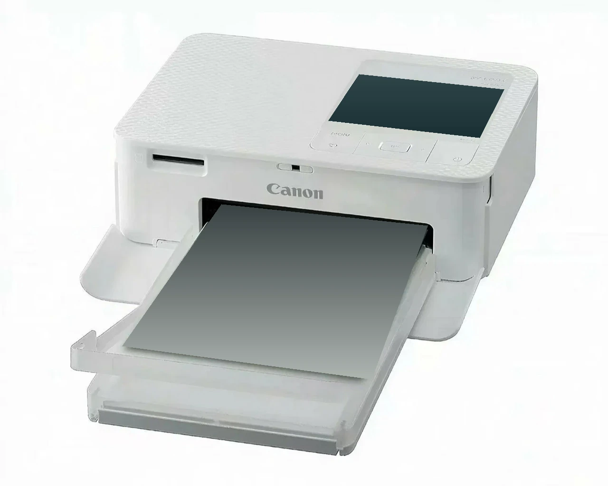

Из другого города · от Вагана
Эфир для Маши.
Покрути ручку или двигай метку на шкале. Чем ближе к нужной волне, тем яснее сигнал.
Радиоприёмник
FM
МГц
Радио выключено
Настройка
Волна поймана
Кадр 1 из 11
Твоя кинолента.

Входящее сообщение
Телеграмма.
На связи. Машинка ждёт сигнал.